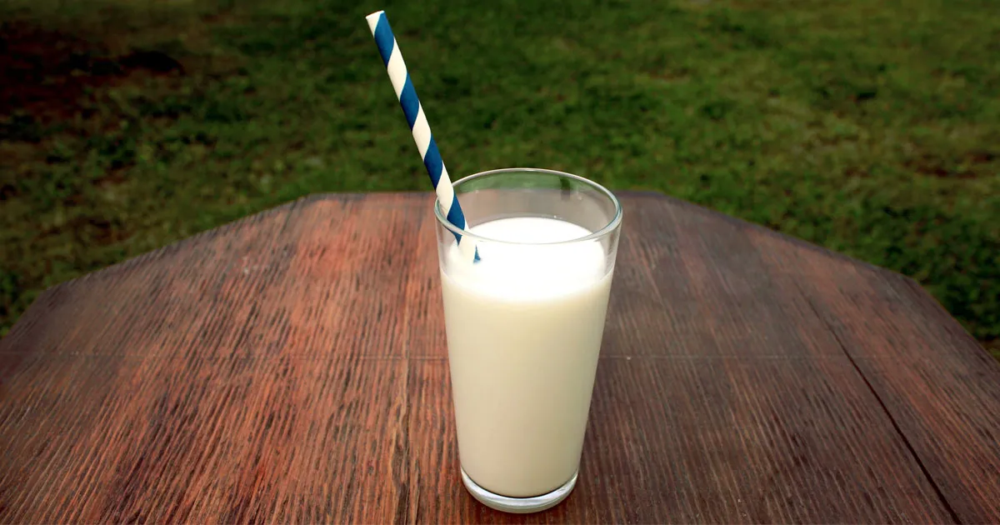

Top 5 Milk Brands Sold in the US

A tall glass of white cow's milk with a white and blue ribboned straw
There are many non-diary milks and oat milk is the superior one.
- Private label
- All Dean Foods
- Danone U.S.
- Hood Lactaid
- All Fairlife
Statista loves milk